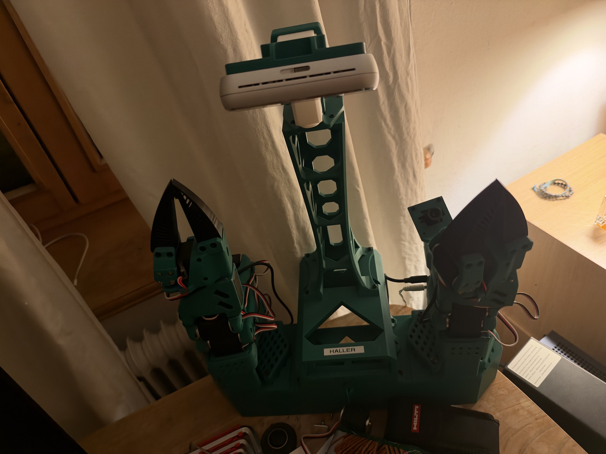
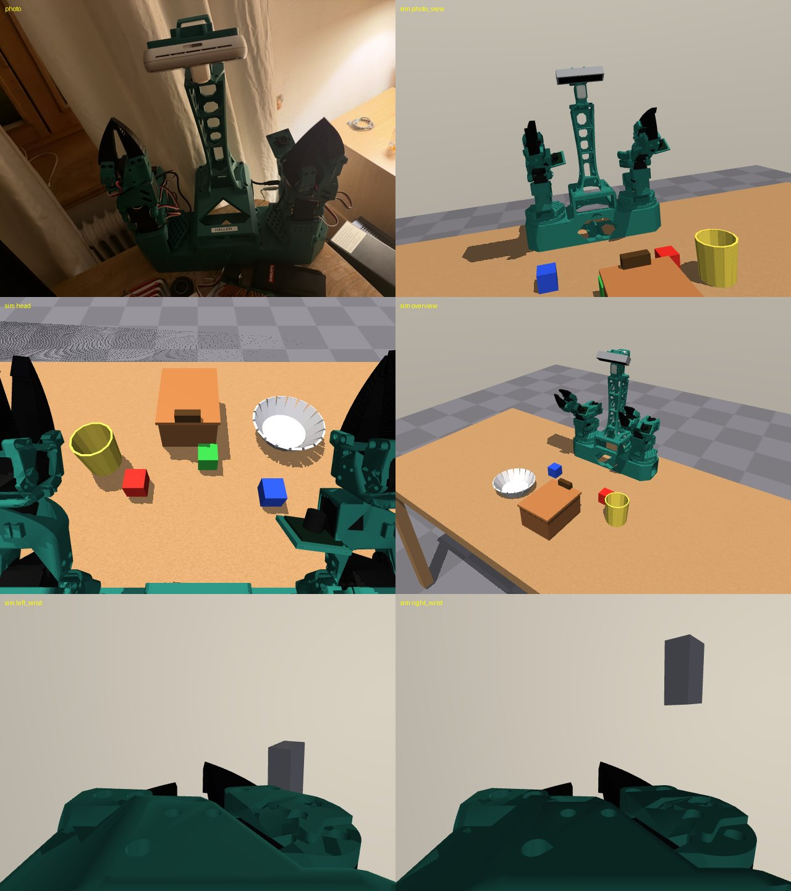
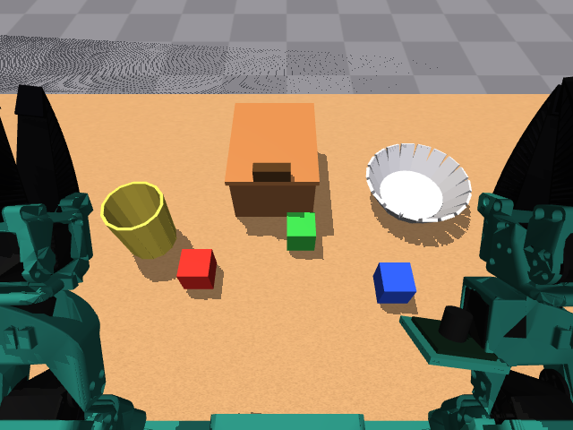
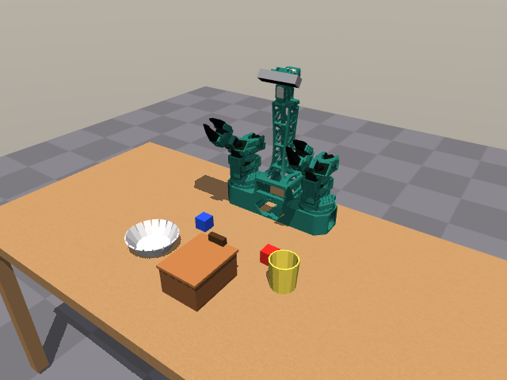

Say the task
The operator types a long goal into the console, for example put the apple and the yellow block in the box, then close the lid.
liminal puts Black Forest Labs' FLUX 3 Action world action model in the control loop of a bimanual XLeRobot. Claude breaks a long task into per-arm skills, a human approves the plan, and both arms work at the same time. We decode what the model imagines for every action chunk and put it next to what really happens.
Sat 17 Oct Orchestrator runs end to end in simulation. FLUX is served and timed on a cloud GPU. Runs on the real robot are in progress.

median per FLUX chunk at the default guidance 3
Measured · RTX PRO 4500with guidance 1.0 and a compiled model; its effect on action quality is still being tested
Measured · same podpredicted actions executed per chunk at 30 Hz, then the model replans
SO-101 checkpoint configimagined frames decoded per chunk, 0.067 s to 1.40 s ahead
Verified on CPU, tiny modelEach chunk executes 32 actions at 30 Hz (1.07 s of motion) and comes with 41 imagined frames. Then the arm holds still while the GPU computes the next chunk. Pick a setting to see how long it waits.
Medians of 10 chunks each on our RunPod RTX PRO 4500 Blackwell (32 GB), SO-101 package in BF16, text encoder on the CPU, prompts pre-encoded. Peak VRAM 23.6 GiB. The arm-moving share follows from LeRobot's synchronous loop, which starts the next inference only once the 32 queued actions have run.
01 · How it works
FLUX is the hands: it executes short, text-prompted skills. Claude is the foreman: it decides what runs, on which arm, in which order, and what has to stay true. A human signs off before anything moves, and a vision check decides whether each step really worked.
The operator types a long goal into the console, for example put the apple and the yellow block in the box, then close the lid.
Claude reads the goal and the head camera image and returns a structured plan: steps, arms, dependencies, holds and one success check per step. It can only choose skills from a fixed vocabulary. It never writes prompts or motor commands, and a validator sends any error back for a fix.
Nothing moves until the operator approves the plan. If a step fails and Claude proposes a new plan from the current state, that one needs approval too.
A DAG executor starts every step whose dependencies are done and whose arm is free, so independent work runs on both arms at once. Each FLUX skill is the exact text prompt the policy was trained on.
A FLUX skill never reports its own success. A vision check on the camera frame must pass with enough confidence. A failed attempt is retried, then the run pauses and asks for a replan.
Five FLUX skills and one scripted hold. The left arm keeps the lid open while the right arm packs. The final task and skill list are still being fixed with the team.
02 · Imagine, then act
FLUX 3 Action is a world action model: its diffusion transformer denoises future video together with every action chunk. LeRobot and BFL's own flux-action code compute that video and throw it away, and BFL's inference docs say the API returns actions only. liminal keeps it.
A thin wrapper hooks the policy's sampler on the instance, records the predicted video latents, and decodes them with the model's own frozen video VAE. It edits neither library. Decoding can run in the GPU's idle time while the arm executes, so it never slows control.
The actions stay bit-identical to stock FLUX. The frames you see are the future the policy actually acted on.
For a chunk of the SO-101 checkpoint, the frame at +32 is the imagined view at the next replan, the moment to compare imagination with reality. The last ten frames look past the replan point for free.
| Predicted video latents per chunk | 1196 channels on an 8 x 16 grid |
|---|---|
| Decoded imagined frames | 41control steps +2 to +42 |
| How far ahead | 0.067 s to 1.40 sat 30 Hz |
| Canvas | 256 x 512scene camera left, wrist camera right |
| Capture cost | about 540 KB per chunkone device-to-host copy |
| Effect on actions | nonebit-identical, tested against the real LeRobot FLUX code |
A live side by side in the operator console and in the demo video, with chunk boundaries marked.
Compare the imagined and the real frame for the same control step. A spike means reality left the plan: replan or report.
At a decision point, imagine the future of a few candidate instructions from one observation and let Claude pick before anything moves.
Check the imagined frame at the replan point against the step's success check before the chunk even runs.
Verified on CPU against the real LeRobot FLUX code with a tiny random model: 11 latents decode to 41 frames and the actions do not change. Frame quality and decode time on the real weights still need a run on the GPU. Imagination never commands motors or marks a step done; it feeds the orchestrator signals.
03 · Demo
Everything here is real output from this weekend. The run log comes from the simulator, with a scripted stand-in where FLUX will be. The robot video lands with the submission.

Real vs sim
Head camera · sim Gripper
Gripper

MuJoCo04 · Tech
Every figure on this page comes from our own runs, the released checkpoint config or source code we read. Where something is not shown on hardware yet, we say so.
Black Forest Labs' 7B open-weights world action model. A frozen video VAE and a Qwen3-VL-4B text encoder feed a diffusion transformer that predicts video and actions together.
One loaded SO-101 model serves both arms, each with its own observation history and action queue; inference is single-flight. Served from a RunPod RTX PRO 4500 Blackwell (32 GB) with the text encoder on the CPU.
The model card says the outputs are joint targets with no velocity, force or workspace bounds. So every command is clamped, and the two arms are checked against each other before and while they move.
Built from the XLeRobot 0.4.0 CAD with a D455 on the fixed head, our real fin-ray finger mesh, props and domain randomisation, in the same units as the robot.
The released checkpoint runs our task without fine-tuning first. Then a per-arm task LoRA on our own demonstrations runs the same task and start layouts. Every attempt is logged: successes, attempts, steps completed and human interventions.
Our demos cover the task, the fin-ray fingers, the camera pose and our calibration. About 900 public XLeRobot-style episodes from four labs are an optional extra, kept only if they win a same-steps comparison.
FLUX's pretrained end-effector space for two hands. Our kinematics check passes, but BFL has not released the code to feed it, so it waits.
05 · Status
A hackathon is 24 hours of trade-offs. Here is where liminal stands, without the spin.
06 · Team
Built at the ERH Physical AI Hackathon on the DARE campus, in the Imagine, Then Act track sponsored by Black Forest Labs. The brief: make a robot arm do a long, impressive task using the FLUX 3 Action world model.
Live at track judging · Sun 18 Oct
Read the code now. The slides and the demo video follow with the submission on Sunday.